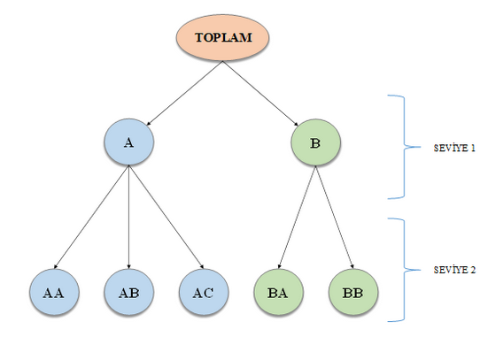

Konuşmalar
Sözlü Sunumlar
Normal Dağılım için Alternatif Bir Kantil Grafiği Önerisi
Engin Yıldıztepe, A.Fırat Özdemir, Tuğçe Paksoy
Normalliğin değerlendirilmesi birçok istatistiksel yöntemin temel varsayım kontrollerindendir. Bu amaçla kullanılan testlerin yanı sıra hızlı yorum yapmayı sağlayan görsel araçlardan da sıklıkla yararlanılmaktadır. Yaygın olarak kullanılan Normal kantil-kantil (Normal QQ) grafiği, teorik kantil değerlerine karşılık gelen örneklem kantil değerlerinin serpme grafiğinde gösterilmesi ile elde edilir (Wilk&Gnanadesikan, 1968). Ancak Normal QQ grafiklerinin yorumlanması subjektif olabilmekte, eğitimli gözler bile güçlük yaşayabilmektedirler (Loy vd., 2016).
NO kantil tahmin edicisi, kitle kantilini tahmin etmek için bütün sıra istatistiklerinin ağırlıklı ortalamasını kullanan asimptotik olarak yansız ve tutarlı bir yöntemdir. Özellikle küçük örneklem genişliklerinde ve uç kantil değerlerinin tahmin edilmesinde quantile() fonksiyonunda kullanılan varsayılan tahmin ediciye göre etkin olduğu gösterilmiştir (Navruz&Özdemir, 2020). Bu çalışmada NO kantil tahmin edicisinin bootstrap kestirimleri ile tasarlanan ve yorumlaması Normal QQ grafiğine göre daha kolay olan qqNO grafiği ve bu amaçla geliştirilen R fonksiyonları tanıtılacaktır.
Anahtar Kelimeler: NO kantil tahmin edicisi, QQ grafiği, qqNO grafiği
Sosyal Medya Çalışmalarında R Kullanımı
Anıl Ersöz, Dilara Özel
Sosyal medya platformları, kullanıcıların görüş ve deneyimlerini paylaşabilecekleri, birbirleriyle etkileşimde bulunabilecekleri bir ortam oluşturmaktadır. Bu platformlarda paylaşılan içeriklerin kullanıcılar tarafından gönüllü olarak oluşturulması ve kullanıcılar arası ilişkilerin gözlemlenebilirliği sosyal bilimler araştırmacılarına yeni fırsatlar sunmaktadır. Diğer bir ifadeyle sosyal medya, sosyal bilimler alanının birçok araştırma sorusunu yanıtlayabilecek zengin bir veri kaynağı durumundadır. R programı ve paketleri ise sosyal medya verisinin elde edilmesi ve analizinde oldukça kullanışlıdır.
Bu konuşmanın ilk amacı, sosyal medya verisinin sosyal bilimlerdeki kullanımının avantajları ve sınırlılıklarıyla ilgili tartışmalara da değinerek dinleyicileri bilgilendirmektir. Sonrasında, sosyal medya platformlarından veri elde etmek için kullanılabilecek academictwitteR (Barrie & Ho, 2021) ve rtweet (Kearney, 2019) paketleri örnek kodlar ile tanıtılacaktır. Ayrıca, sosyal medya verilerinin çözümlenmesinde sıklıkla kullanılan sözlük temelli duygu analizinin aşamalarında kullanılabilecek R paketlerinden tm (Feinerer & Hornik, 2020), qdap (Rinker, 2020) ve SentimentAnalysis (Proellochs & Feuerriegel, 2021) ile sosyal ağ analizinin gerçekleştirilmesinde kullanılabilecek igraph (Csardi & Nepusz, 2006) ve visNetwork (Almende, v.d., 2021) paketlerinden bahsedilecektir. Sosyal medya araştırmasının ve araştırma sürecinin farklı aşamalarında faydalanılabilecek R paketlerinin tanıtılacağı bu konuşmanın sosyal bilimler araştırmacıları için bilgilendirici ve R kullanımına teşvik edici olacağı düşünülmektedir.
Ridge Regresyonda Yanlılık Parametresi Tahmininde Bir R Algoritması
Filiz Karadağ, Hakan Savaş Sazak
Regresyon analizinde karşılaşılan çoklu doğrusal bağlantı problemine karşı en etkili çözüm yöntemlerinden birisi ridge regresyondur. İlk olarak ridge regresyon tahmin edicileri, LS (Least Square) tahmin yöntemine alternatif olarak Hoerl ve Kennard (1970a,b) tarafından önerilmiştir. Ridge regresyon aynı zamanda çoklu doğrusal bağlantı problemine çözüm sunan en pratik ve popüler yöntemdir ve LS tahmin metodu temel alınarak elde edilmiştir. Ridge regresyon tahmin edicisi, LS yönteminden farklı olarak parametre \(\hat{\beta}\) tahmin edicisinin tanımında mevcut olan X’X matrisinin diagonal unsurlarına k gibi küçük pozitif bir sayı (k>=0) eklenerek LS yönteminin geliştirilmesiyle elde edilmiş bir yöntemdir. Bu k sabiti “ridge” ya da “yanlılık” parametresi olarak adlandırılır. Hoerl ve diğerleri (1975) k değerinin, ridge regresyon tahmin edicilerinin Ortalama Hata Kareler (Mean Square Error, MSE) değerinin LS tahmin edicilerin MSE değerinden küçük olmasını sağlayacak derecede küçük seçilmesi gerektiğini belirtmiştir.
Çoklu doğrusal bağlantı probleminin tespit edilmesine yönelik birçok yöntem vardır. Yüksek varyans şişirme faktörü (Variance Inflation Factor, VIF) bunlardan bir tanesidir (Marquaridt (1970)). Açıklayıcı değişkenler arasındaki korelasyon 0.95 ve daha yüksek olduğunda VIF değerlerinin oldukça yüksek elde edildiği simülasyona dayanan bir çalışmayla doğrulanmıştır (Karadağ ve Sazak (2019)). Bu çalışmada, k yanlılık parametresi, Kutner M.H. ve diğerleri (2004,sf.435)’da olduğu gibi, VIF değerini 1’in altına düşürmeyen 1’e en yakın VIF değerini veren, en küçük k parametre tahmini hesaplanarak elde edilmiştir. Ayrıca, R ortamında ridge parametresini hesaplayan, bunu yeni bir ridge regresyon tahmin edicisi elde etmede kullanan ve ardından tüm ridge regresyon analizi sonuçlarını sunan bir algoritma yazılmıştır. Yazılan bu algoritma gerçek yaşam verileri ile çalıştırılmış ve sonuçlar sunulmuştur.
Anahtar Kelimeler: Çoklu doğrusal bağlantı, En Küçük Kareler, VIF
R Programlama Dilinde İki Değişkenli Olasılık Dağılımlarından Sıra Tabanlı Örneklemlerin Türetilmesi
Yusuf Can SEVİL, Tuğba ÖZKAL YILDIZ
Parametrik yöntemler üzerine çalışan araştırmacılar, önerdikleri yöntemleri var olan yöntemler ile karşılaştırmak için çoğunlukla Monte-Carlo simülasyon tekniğinden yararlanmaktadırlar. Simülasyon aşamasında, belirli bir olasılık dağılımından veri simülasyonu yapılmasına ihtiyaç duyulmaktadır. Birçok tek değişkenli olasılık dağılımından (Binom, Geometrik, Normal ve Üstel dağılımları gibi) veri türetilmesi için R fonksiyonları (rbinom, rgeom, rnorm ve rexp) bulunmaktadır. Ancak, iki değişkenli ve çok değişkenli olasılık dağılımlarından veri türetilmesi söz konusu olduğunda, süreç biraz daha karmaşık hale gelmektedir. Dolayısıyla, bu durum literatürde önemli bir problem olarak dikkat çekmektedir. Bu çalışmada amacımız, iki değişkenli normal ve tip-1 Gumbel’ın iki değişkenli üstel dağılımlarından sıralı küme örneklemesi (SKÖ), uç SKÖ (USKÖ), yüzde SKÖ (YSKÖ) ve genelleştirilmiş gelişmiş SKÖ (GGSKÖ) tasarımlarının türetilmesidir. Bu çalışmada geliştirilen R fonksiyonları: tip-1 Gumbel’ın iki değişkenli üstel dağılımı için BiExp(n,theta), SKÖ için RSS(s,c,MU,VAR,ro,Theta,Dist), USKÖ için ERSS(s,c,ro,R1,R2,MU,VAR,Theta,Dist) ve YSKÖ için PRSS(s,c,ro,p,MU,VAR,Theta,Dist). R fonksiyonlarında kullanılan parametreler paket içerisinde detaylıca tanımlanmaktadır. R paketi https://github.com/YCS92/GenerateRankedBasedSamples adresinden paylaşılmıştır. Bu sunumda örnek bir uygulamadan da bahsedilecektir. Bu uygulamada, tip-1 Gumbel’ın iki değişkenli üstel dağılımına ait ilişki parametresi için SKÖ, USKÖ ve GGSKÖ tasarımları kullanılarak en çok olabilirlik (EÇO) kestiricileri çalışılmıştır. Ayrıca, bağımsızlık testi için olabilirlik oran (OO) testleri incelenmiştir. Sonuç olarak, GGSKÖ tasarımına ait EÇO kestiricisinin ve OO testinin diğer örnekleme tasarımlarına ait kestiricilere ve OO testlerine göre daha iyi performansa sahip olduğu görülmüştür.
Anahtar kelimeler: Sıralı küme örneklemesi, iki değişkenli olasılık dağılımı, veri simülasyonu, R programlama dili, Monte Carlo simülasyonu
İşletmeler için Uçtan Uca Verimlilik Analizi: benchmarking ve tidyverse
Murat Öztürkmen, Hüseyin Budak
Çok şubeli, çok bölgeli işletmeler ya da kurumlar, şube ya da bölgelerdeki işletme faaliyetlerinin çıktılarının kullandıkları kaynakları göz önüne alarak verimli bir biçimde gerçekleşip gerçekleşmediğini ölçmek isterler. Böylece verimli olan şubeler belirlenebilir, fazla ya da eksik kaynaklar tespit edilebilir, şubeler arasında verimlilik farkının nedeni olan kaynaklar belirlenerek aksiyonlar alınabilir. Böyle bir verimlilik analizi için yaygın bir yöntem ise veri zarflama analizidir. Bu çalışmada veri zarflama analizi, farklı bölge ve kümelerdeki şubeler için iteratif bir şekilde kullanılarak daha tutarlı bir verimlilik çıktısı elde etmek hedeflenmiştir. Veri kümesi olarak çok şubeli bir firmanın verileri çalışmanın konusu olmuştur. Çıktı olarak günlük ciro ve girdi olarak da sosyoekonomik veriler ile şube bazlı veriler analize dahil edilmiştir. Çalışmada farklı üst bölgeler ayrımında iki grup şube için analizler gerçekleştirilmiştir. İlk bölge grubunda 20 kümede toplam 740 şube için verimlilik analizi gerçekleştirilirken, ikinci bölge grubunda ise 5 kümede toplam 360 şube için verimlilik analizi gerçekleştirilmiştir. Çalışmada verimlilik analizleri R programlama dilinde yazılmış benchmarking kütüphanesi ile gerçekleştirilmiş, tüm iteratif süreç ve çıktılar ise tidyverse yaklaşımı ile yeniden ve jenerik bir biçimde kodlanarak yeni bir verimlilik analizi sözdizimine ulaşılmıştır. Analiz çıktıları ise rmarkdown ile raporlanarak dinamik raporlar türetilmiştir. Verimlilik etiketi oluşturulan şubeler için ise ek olarak bir yapay öğrenme modeli akışı oluşturma opsiyonu da sözdizimine eklenmiştir.
Anahtar Kelimeler: veri zarflama analizi, optimizasyon, verimlilik
Normal Dağılmayan Veriler için Süreç Yeterlilik İndekslerinin Karşılaştırılması
Elif Kozan, Agah Kozan
Normal dağılıma dayanan geleneksel yaklaşım ile hesaplanan süreç yeterlilik endeksleri, süreç dağılımının çarpık olup olmadığını göz ardı ederek normal dağılıma uygunluk varsayımı altında uygulanmaktadır. Bu konuda yaşanan hesaplama yanlışlıklarının giderilmesi için normal olmayan dağılıma sahip süreçlerde yeterlilik endeksi hesaplamaları için birden fazla yöntem geliştirilmiştir.
Box ve Cox (1964) tarafından, normal olmayan verileri normal hale getirmek için bir dönüşüm tekniği kullanılmış ve yeterlilik endeksleri hesaplamalarında Box-Cox Dönüşüm Yöntemi adı ile uygulanmıştır. Bai ve Choi (1995) tarafından, normal olmayan süreç dağılımları altında yeterlilik endeksleri hesaplamaları için Ağırlıklandırılmış Varyans Yöntemi (WVM, Weighted Variance Method) adını verdikleri yeni bir yöntem önerilmiştir. Chang ve Bai (2001), WVM’ den daha kolay uygulanabilir olduğunu ileri sürdükleri yeni bir yöntem geliştirmiş ve bunu kontrol şemalarında uygulamışlardır. Bu yöntem Ağırlıklandırılmış Standart Sapma Yöntemi (WSDM, Weighted Standart Deviation Method) olarak adlandırılmıştır. Sonrasında, Chang vd. (2002) tarafından bu yeni yöntem süreç yeterlilik endekslerine uyarlanmıştır.
Bu çalışmada, Normal olmayan süreçler için önerilmiş olan; süreç yeterlilik endekslerinden, WVM, WSDM ve Box-Cox Dönüşümü ele alınmıştır. Bu endeksler Weibull ve Gamma dağılımına sahip süreçler için uygulanmıştır. Söz konusu dağılımlara ilişkin veri üretilmiş ve R da hazırlanmış olan algoritma ile hesaplanmış bu süreç yeterlilik endekslerinin performansları karşılaştırılmıştır.
Voleybol Analitiğinde R Kullanımı
İlker Met, Güven Tunalı, Ayfer Erkoç
Veri analizi, bir konu üzerinde kritik karar verme sürecinde kullanılacak bilgileri keşfetmek için verilere erişim, temizleme, dönüştürme ve modelleme süreci olarak tanımlanabilir. Veri analizinin amacı, verilerden faydalı bilgiler çıkarmak ve bu bilgiler doğrultusunda doğru kararlar verebilmektir. Günümüzde farklı disiplinlerde bilgiye ulaşmak için verinin anlamlandırılması çabası analitik yöntemler aracılığı ile yoğun bir şekilde yapılmaktadır. Bilgi, belirli amaçlara ulaşmak veya belirli bir anlayışı geliştirmek üzere verinin, bir dönüşüm ve analiz süreci sonucunda yöneticiler için faydalı biçime sokulmuş şeklidir (Gökçen, 2011, s. 20). Farklı bir ifadeyle yöneticilerin karar verme aşamasında kullandıkları bilgi, verinin bilgi işlem süreçlerinden geçmesiyle faydalı ve anlamlı bir şekle sokularak verilen kararların başarıya ulaşmasına yardımcı olan değeri, veri ise anlamlı ve yararlı bilgi hâline gelmeden önce işlenmesi gereken bilgisel ham maddeleri ifade etmektedir (Ersöz ve Ersöz, 2015, s. 32). Bu bağlamda, veriye dayanan bir yaklaşımla stratejik kararlar vermek, organizasyonların varlığını devam ettirebilmesi ve yenilikçilik temelli rekabet avantajını sürdürülebilir kılmasında büyük önem arz etmektedir.
Diğer disiplinlerde olduğu gibi, teknolojinin de etkisiyle veri dünyasının genişlemesi ve erişilebilirliğinin kolaylaşması sayesinde veri analitikleri ve modellemeler spor dallarında da kullanılmaya başlanmıştır. Karmaşık verilerden anlamlı analitikler ve modeller oluşturmak diğer disiplinlerde olduğu gibi voleybolda da takıma ve oyunculara katkı sağlamaktadır (Met, 2022). Tüm spor dallarında olduğu gibi voleybolda da teknik direktörün amacı maç esnasında maçı izlemek ve analiz etmek olsa da gözün ve hafızanın kaydedebileceği bilgiler sınırlıdır. Elit ve normal düzeydeki antrenörler arasında yapılan bir araştırma da maç bilgilerini hatırlama da hafız kapasitesi üzerinde anlamlı bir fark olmadığı tespit edilmiştir (Franks ve Goodman,1985). Dolayısıyla yanılgılardan ve subjektiflikten uzaklaşabilmenin yolu maçların analitiklerle desteklenerek analiz edilmesinden geçmektedir. Bu açıdan takımın ve oyuncunun verimliliğinin belirlenmesi ve strateji oluşturulması açısından analitikler son yıllarda giderek ön plana çıkmaktadır. Sporcunun bireysel verimliliğini belirlemek ve teknik, taktik ve stratejik gelişimini sağlamak için analitiklerden destek alınması gerekmektedir. Rakip takım analizleri ile de strateji geliştirilmesi de yine literatürde rastlanan çalışmalar arasında yer almaktadır.
Voleybol analizi takımların oyun strateji geliştirmesi için önemlidir. Oyuncunun gelişiminin tarihsel olarak incelenmesi, başarılı pozisyonların birbirleriyle olan ilişkisinin keşfedilmesi, voleybol sahasında oyuncunun güçlü ya da zayıf oynadığı kanatların tespit edilmesi ve güçlendirilmesi gibi çok yönlü izler maç analizleri ile tespit edilebilir. Voleybol analizleri bu yönüyle antrenörlere ve oyunculara öngörü şansı tanımaktadır.
Voleybol analizleri yapılırken de R’ın tek sayılabilecek datavolley kütüphanesi istenilen her türlü analizin yapılmasına olanak sağlamaktadır. Kütüphanenin çalışma mantığı dvw. uzantılı görüntü dosyalarını veri dosyalarına dönüştürülmesidir. Kütüphane direk R studio içine kurulduktan voleybol görüntü dosyası içeri aktarılarak analiz yapılabilir. Datavolley kütüphanesi dvw. formatında voleybol maç dosyalarını ayrıştırmak ve bunlarla çalışmak için işlevler sağlar. (Ben, R. 2022** )
Bankamız voleybol takımı “Ziraat Bankkart” ın lig maçlarının verimliliği ve oyuncuların performanslarını takip ederken R studio programından yararlanılmaktadır.
dtComb: Tanı Testlerinin Birleştirilmesine Yönelik Kapsamlı Bir R Kütüphanesi
Serra İlayda Yerlitaş, Serra Bersan Gengeç, Gözde Ertürk Zararsız, Selçuk Korkmaz, Gökmen Zararsız
3Trakya Üniversitesi Tıp Fakültesi Biyoistatistik ve Tıbbi Bilişim AD, EDİRNE Hastalıkların teşhisinde ve birbirinden ayırt edilmesinde tanı testlerinin büyük önemi bulunmaktadır. Tanı testlerinin yaygın olarak kullanılabilir düzeye gelmesinde bu testlerin tanı doğruluk performansı ve güvenilirlikleri dikkate alınır. Birden fazla tanı testi bulunan hastalıklarda ise sıklıkla yapılan işlem tanı testlerinin performanslarının karşılaştırılması ya da tanı testleri birbirine oranlanarak tanı testi performansının artırılmaya çalışılmasıdır. Tanı testlerinin istatistiksel yöntemler kullanılarak birleştirilmesi ile yüksek doğrulukta kestirimler elde edilebilmektedir. Tanı testlerinin performans artırmaya yönelik birleştirilmesine yönelik literatürde çok sayıda yöntem bulunsa da, bu yöntemlerin uygulanabileceği kapsamlı bir yazılım bulunmamaktadır. Bu çalışmada, iki tanı testinin birleştirilmesine yönelik geliştirilmiş ve dağınık biçimde yer alan çok sayıda yöntemin dtComb R kütüphanesi altında bir araya getirilmesi ve kullanıcılara sunulması amaçlanmıştır. Tanı testi birleştirme yöntemleri doğrusal yöntemler, doğrusal olmayan yöntemler, matematiksel operatörler ve makine öğrenmesi algoritmaları olarak dört gruba ayrılmıştır. Bu dört grup içerisinde 143 adet yaklaşımın kodlamaları, 19 farklı R fonksiyonu içerisinde gerçekleştirilmiştir. Araştırmacılar dtComb yazılımını kullanarak altın standart durumun ve iki tanı biyobelirtecinin sürekli değerlerini içeren bir veriyi girdi olarak kullanabilir. Çıktı olarak ise dtComb kütüphanesi, kullanıcı tarafından seçilmiş yöntem ile birleştirilmiş tanı testi skorlarını, tekli ve birleştirilmiş tanı testi istatistiklerini, ROC eğrisi ve eğri altında kalan alan istatistiklerini ve birleştirilmiş tanı testinin tekli tanı testi skorları ile karşılaştırmasına ilişkin test sonuçlarını raporlayabilir. Yazılımın geliştirme süreci Github ortamında gerçekleştirilmiş, yazılım testleri ise R programlama dilinin testhat kütüphanesi kullanılarak yapılmıştır.
dtComb kütüphesine izleyen adresten erişilebilir: https://github.com/gokmenzararsiz/dtComb
Anahtar kelimeler: Makine öğrenmesi, R programlama dili, ROC analizi, tanı testlerinin birleştirilmesi
Çoklu Omik Verilerde Sınıflandırma Yaklaşımlarının Performanslarının R Programlama Dili ile Araştırılması
Funda Ipekten, Gozde Erturk Zararsiz, Halef Okan Dogan, Vahap Eldem, Gokmen Zararsiz
Çoklu omik teknolojilerinin kullanımı hastalık etiyolojisini daha ayrıntılı inceleme fırsatı sunmaktadır. Hastalık etiyolojisinin moleküler karmaşıklığının çözümlemelerinde tek bir omik teknolojisini kullanmak yerine çoklu omik teknolojileri kullanarak daha güçlü ve kolay yorumlanabilir sonuçlar elde edilebilmektedir. Ayrıca biyolojik sistemde kullanılabilecek modeller ve hastalığa ilişkin tanı ve tedaviler açısından birleştirme ve sınıflandırma yöntemlerinin kullanımının önemli olduğu düşünülmektedir. Bu çalışmada çoklu omik veriler üzerinde veri birleştirme ve sınıflandırma yöntemlerinin performanslarının araştırılması amaçlanmıştır.
Çalışmada böbrek ve tiroit kanseri olmak üzere 2 farklı gerçek veri seti kullanılmıştır. Bu ham veriler ile mRMR (Minimum Redundancy Maximum Relevance) ve PCA (Principal Component Analysis) analizi kullanılarak oluşturulan veriler art arda ve model tabanlı birleştirme yöntemleri ile birleştirilmiştir. Art arda birleştirme ve model tabanlı birleştirme yöntemleri kullanılarak birleştirilen veriler MKL (Multiple Kernel Learning), RF (Random Forest) ve SVM (Support Vector Machine) sınıflandırma yöntemleriyle hastalığın alt sınıfları tahmin edilmiştir. Analizler R programlama dilinin 3.6.2 versiyonu kullanılarak CRAN ağında yer alan caret, lattice, mltools, MLmetrics, RMKL, kernlab kütüphaneleri kullanılarak gerçekleştirilmiştir.
Art arda birleştirilmiş veride mRMR değişken seçimi uygulanarak elde edilen böbrek ve tiroit verilerinde sınıflandırma performansı en yüksek olan yöntem MKL’dir (AUC=1.000). Model tabanlı birleştirilmiş veride mRMR değişken seçimi uygulanarak elde edilen böbrek ve tiroit verilerinde sınıflandırma performansı en yüksek olan yöntem SVM’dir (Verilere ait AUC değerleri sırasıyla 0.967, 0.669). Art arda birleştirilmiş veride mRMR değişken seçimi ve PCA yöntemi uygulanarak elde edilen böbrek verisinde, sınıflandırma performansı en yüksek olan yöntem MKL (AUC=0.926) iken tiroit verisinde SVM’dir (AUC=0.582). Model tabanlı birleştirilmiş veride mRMR değişken seçimi ve PCA yöntemi uygulanarak elde edilen böbrek ve tiroit verilerinde sınıflandırma performansı en yüksek olan yöntem SVM’dir (Verilere ait AUC değerleri sırasıyla 0.950, 0.661). Yöntemler arasında, AUC (Area Under The Curve) değerlerinin karşılaştırma sonuçlarına göre istatistiksel olarak anlamlı bir farklılık bulunmuştur (p=0.025). Çoklu karşılaştırma sonucuna göre MKL yönteminin AUC değeri (0.916), RF ve SVM yöntemlerinin AUC değerlerinden (0.771, 0.845) yüksek olduğu gözlenmiştir.
Analiz sonuçlarına göre farklı omik veri türlerinde, birleştirme ve sınıflandırma yöntemlerinin performansları birbirlerine göre farklılık gösterebilmektedir. Değişken seçimi kullanımı yaklaşımların performanslarının üzerinde etkili olabilmektedir. Ayrıca değişken seçimi uygulandıktan sonra temel bileşenler analiz yöntemi kullanılarak elde edilen verilerde ilgili yöntemlerin performanslarında düşürücü bir etkisi olduğu gösterilmiştir. mRMR değişken seçimi kullanılan verilerin art arda birleştirme yöntemiyle birleştirilmesi ve çoklu omik verilerin MKL sınıflandırma yönteminin hastalıklarının alt tiplerinin tahmininde diğer yöntemlere nazaran daha doğru ayırabildiği gösterilmiştir.
Anahtar Kelimeler: Çoklu omik, metabolomik, RNA-dizileme
R ile Sağkalım Veri Analizinde Rastgele Orman Yöntemi Uygulaması
Gonca Buyrukoğlu
Sağkalım verileri ilgilenilen bir olayın meydana gelme zamanına kadar üretilen verilerdir. Bu tarz veriler sağlık başta olmak üzere birçok alandan araştırmacının ilgisini çekmektedir. Bu verileri analiz ederken başvurulan yöntemlerin başında klasik Cox regresyon analizi gelmektedir. Ancak veri büyük boyutlu ya da daha karmaşık yapıda olduğunda Cox regresyon analizi tek başına yeterli olmayabilir. Böyle durumlarda daha ileri teknikleri içeren çeşitli makine öğrenmesi tekniklerinden faydalanılmaktadır. Ancak, rastgele orman metodu perspektifinde rastgele sağkalım orman (random survival forest, RSF), ve koşullu çıkarım orman (conditional inference forest, cforest) modelleme yöntemleri sağkalım verileri analizi için uygun zemin oluşturmaktadır. RSF metodu özellikle sağkalım verilerini herhangi bir varsayıma dayandırmaksızın modellemek için geliştirilen bir yöntem olduğundan ve Cforest yöntemi ise özel bir durum olarak sağkalım ağaçlarını içeren istatistiksel testlere dayalı bir yöntem olduğundan dolayı bu çalışmada incelenecektir. Dolayısıyla bu çalışmada, bu yöntemlere ilişkin son gelişmeler ele alınacak ve bir uygulama veri seti olan Alman meme kanser çalışması Grup 2 (German Breast Cancer Group 2, GBSG2) verileri R programında analiz edilerek performansları değerlendirilecektir.
Anahtar Kelimer: Koşullu çıkarım orman yöntemi, rastgele sağkalım orman, C-index, tahmin hata eğrisi
Yapısal kırılmaların Fourier yaklaşımı ile modellenmesi:Fourier ESTAR eşbütünleşme testi ve uygulama örneği
Dr. Gülşah Sedefoğlu
Ekonomik veriler yapı itibari ile farklı sayı, tarih ve formlarda kırılmalara sahip olabilmektedir. Klasik zaman serisi ekonometrisi yaklaşımında yapısal kırılmalar modellenirken genelde kukla değişkenlerden yararlanılmış olsa da kukla değişken kullanımından kaynaklanan önsel bilgiye bağlı problemlerin üstesinden gelebilen yaklaşımlara ihtiyaç duyulmaktadır. Bu noktada, esnek Fourier yaklaşımı yapısal kırılmaların modellenmesinde kukla değişken kullanımına alternatif bir yaklaşım olarak önerilmektedir. İlk olarak birim kök testlerinde kullanılmaya başlanan bu yaklaşım, simülasyon sonuçlarından elde edilen başarılar neticesinde eşbütünleşme testlerinde de kullanılmaya başlanmıştır. Bu çalışmada, yapısal kırılmaların Fourier yaklaşımı ve doğrusal olmayan yapının üstel yumuşak geçişli otoregresif (ESTAR) model ile modellendiği bir eşbütünleşme testi önerilmesi ve R (4.0.5) programı ile elde edilen simülasyon sonuçlarına yer verilmesi amaçlanmaktadır. Bunun yanında, testin adımlarını teoride ve program uygulamasında göstermek adına Türkiye’de satın alma gücü paritesi hipotezinin geçerliliği test edilmektedir. Monte Carlo simülasyon sonuçları değerlendirildiğinde, önerilen testin boyut özelliklerinin farklı gözlem ve Fourier frekanslarında nominal büyüklüğe yakın olduğu görülmektedir. Gözlem değerlerindeki artışa bağlı olarak testin gücü de artmakta ve özellikle düşük Fourier frekanslarında daha güçlü sonuçlara ulaşılmaktadır. Kırılmaların dikkate alınmadığı ESTAR testi ile güç karşılaştırılması yapıldığında, Fourier ESTAR testinin daha iyi bir performans gösterdiği görülmektedir. Uygulama sonucunda, kırılmalar dikkate alınmadığında Türkiye’de satın alma gücü paritesi hipotezinin geçerli olmadığı bulgusuna ulaşılırken, kırılmalar Fourier yaklaşımı ile modellendiğinde hipotezin geçerli olduğu sonucuna varılmaktadır.
Anahtar Kelimeler: ESTAR, Eşbütünleşme, Fourier yaklaşımı, Yapısal kırılma
Topictisat ile İktisatçıların Twitter Verilerinin Analizi: İktisatçılar ekonomi gündemini nasıl okuyor?
Oktay Özden
Topictisat R Shiny üzerinde geliştirilmiş bir web uygulamasıdır. Bu çalışmada Twitter’ı aktif olarak kullanan 102 iktisatçının Tweetleri anlık olarak analiz edilmektedir. Topictisat, metin analizi yöntemleri ile tekli ve ikili kelime sıklıklarını, kelime ağlarını çıkarmaktadır. İki ayrı örneklem olarak anaakım ve heterodox iktisatçıların ekonomi gündemini nasıl algıladıklarını araştırmak üzere uygulamanın geliştirilmesi devam etmektedir.
Anahtar Kelimeler: İktisat, Twitter, Metin Analizi
R ile Bayesyen Modelleme ve Mekansal Ekonometrik Uygulamalar
Pelin Akçagün
Bu sunumda, ekonometrik yazında hızla gelişmekte olan iki alan, mekânsal ve Bayesyen yöntemler, hesaplama olanakları açısından geniş imkanlar sunan R programı çerçevesinde tartışılacaktır. Mekânsal modellerde Bayesyen teknikler çok sayıda olanak içermesine rağmen panel verilere henüz yeterince genişletilmemiştir. Halen gelişmekte olan bu yazında hesaplama tekniklerinde daha etkin sonuçlar elde etme potansiyeli bulunmaktadır.
Bayesyen yöntem, makine öğrenmesi ve yapay zekâ algoritmaları gibi pek çok alanda kullanılan bir çıkarsama yöntemi olarak giderek daha fazla dikkat çekmektedir. Bu yöntemde, önsel bilgiler veriden elde edilen bilgilerle güncellenerek son bilgiyi oluştururlar. Bayesyen yaklaşımda parametre, klasik frekansçı yaklaşımın tersine bilinmeyen bir sabit değildir. Aksine, olasılık dağılımı olan bir değişken gibi düşünülmekte ve parametreye ilişkin çıkarsamalar sonsal dağılıma dayanarak yapılmaktadır; parametrenin nokta tahmini de genellikle sonsal dağılımın ortalamasıdır (Koop, 2003; Geweke, 2005). Öte yandan, olabilirlik fonksiyonları ile aynı aileden gelen eşlenik önsellerin olmaması durumunda sonsal dağılımların analitik olarak hesaplanması çok güç olabilmektedir. Bu durumda Metropolis-Hastings ve Gibbs Örneklemesi gibi Markov Zinciri Monte Carlo (MCMC) yöntemleri kullanılabilmektedir.
Bayesyen yaklaşımın klasik yaklaşıma göre önemli avantajları bulunmaktadır. Klasik yaklaşımın aksine Bayesyen yöntem başlangıçta varsayımlara dayanmamakta, model yapısı itibariyle daha esnek bir alternatif sunabilmektedir. Maksimum olabilirlik (ML) yönteminin gereksindiği normallik varsayımı ile yola çıkmadığından, dağılımında çarpıklık olan veriler için de uygulanması mümkündür. Bayesyen yaklaşımda varsayımlar yerine veri tarafından güncellenmeye açık önsel bilgiler kullanılmakta; önsel ve sonsal bilgilerin arasında büyük fark olması ise veriden öğrenildiği şeklinde yorumlanmaktadır. Asimptotik çıkarımlar kurmaması sayesinde küçük örneklem boyutlarında kullanmak için uygundur. Kayıp verilerin tahmin edilmesinde, doğrusal olmayan değişkenlerde ve hiyerarşik modellerin analiz edilmesinde Bayesyen yöntemin sağladığı üstünlükler söz konusudur.
Mekânsal modellerde Bayesyen yöntemlerin kullanılmasına LeSage (1997) çalışmasının öncülük ettiği söylenebilir. Kesit verideki mekânsal modeller için yapılan çalışmadan uzun bir zaman sonra Bayesyen yöntemler mekânsal panel veri modellerine de uygulanmıştır (LeSage, 2014). Bu çalışma mekânsal panel verideki çok çeşitli spesifikasyonlar arasında seçim yapılmasındaki güçlüğe değinmekte ve Bayesyen yöntemin sağladığı olanakları tartışmaktadır. Buna göre yalnızca mekânsal Durbin hata modeli ve mekânsal Durbin modelinin Bayesyen tahminlerinin yeterli olduğu, model belirsizliği durumda MCMC simülasyonlarının kolaylık sağladığı gösterilmektedir. LeSage ve Chih (2018) mekansal otoregresif tipteki heterojen panel veri modelleri için Bayesyen MCMC yöntemleri kullanmaktadır. Sonuçlar bu tip modellerin tahmininde Bayesyen önsel bilgilerin faydalı olduğunu göstermektedir. Kolineer olan değişkenler için ya da önsel olarak sıfır olduğu bilinen katsayılar için ML yöntemi ile tahminde sorunlar yaşanırken Bayesyen yöntemin iyi çalıştığı gözlenmektedir.
Daha önce LeSage tarafından yapılan Bayesyen mekânsal panel veri model tahminleri MATLAB yazılımı kullanılarak programlanmıştır. Ancak R gibi açık kaynak kodlu yazılımlar daha fazla araştırmacıya ulaşabilmekte, daha sık ve kolay geri bildirim alınmasını sağlamaktadır. R yazılımında halihazırda mekânsal modellerin Bayesyen yöntemlerle tahmin edilmesi için kullanılabilen R-INLA ve CARBayes gibi paketler bulunmaktadır. Ancak mekânsal panel veri yöntemlerine genişletilebilecek bir paket henüz oluşturulmamıştır. Bu sunumda, mekânsal panel veri modellerinin Bayesyen yöntemle tahmin edilmesi için kullanılabilecek böyle bir paket oluşturulmasının olanakları tartışılacaktır.
Anahtar Kelimeler: R programı, MCMC, Gibbs Örneklemesi, Mekansal Ekonometri.
Bitkisel Ürün Verim Sigortası Analizinde Mekansal-Zamansal Bağımlılık
Güven Şimşek, Şahap Kasırga Yıldırak
Tarımsal üretimin omurgası olan çiftçinin üretimine devam etmesi için üretimden kaynaklanan risklere karşı kendini koruma altına alması gerekmektedir. Çiftçinin ortaya çıkan teminat ihtiyacına yönelik sigorta poliçelerinin sunulması önem kazanmaktadır. Çiftçinin varlığının büyük oranda çevresel risklere maruz olması, çiftçileri toplumun en savunmasız kesimlerinden biri haline getirmektedir. Bu nedenle de bu çalışmada verim sigortası ile ilgilenilmiştir. Verim sigortası, verimin belirlenen bir seviyeyi aşmaması durumunda ortaya çıkan verim kaybını teminat altına almaktadır. Tarımsal üretimi belirlenmiş bir seviyede tutmayı amaçlayan verim sigortası ekosistemde sürdürülebilirliği sağladığı için bu sigorta ürününün tüm tarımsal sigortalar içerisinde özel bir yeri vardır. Bu çalışmada aynı zamanda bitkisel ürün veriminin mekansal-zamansal modellemesi yoluyla tarımsal sigortalar için en büyük zorluk olan iklim değişikliği de incelenmiştir. Sel, kuraklık, dolu gibi şiddetli hava olaylarındaki değişiklikler, tarımsal üretim üzerindeki konuma ve zamana bağlı etkiler hesaba katılarak ele alınmıştır. Bu çalışmada, mekansal-zamansal bağımlılığı yansıtmak amacıyla verimin koşullu dağılımı için hiyerarşik Bayesyen yaklaşım kullanılmıştır. Çalışmada buğday üretim hacmi bakımından üst sıralarda yer alan Ankara ve Konya illerine ait toplam 47 ilçe için 2004-2018 yılları arası buğday verim verileri kullanılmıştır. Buğday verimini tahmin etmek için ilk olarak açıklayıcı değişkenler olmaksızın sadece konum, zaman ve mekansal-zamansal etkilerin yer aldığı rastgele etkiler incelenmiştir. Model seçimi ve performans kriterlerine göre tercih edilen model kullanılarak; bölge, il ve seçilen ilçeler için prim oranları elde edilmiş ve sonuçlar sunulmuştur. Modellemeler için R programındaki R-INLA paketi kullanılmıştır.
Anahtar Kelimeler: Verim sigortası, hiyerarşik Bayesyen modelleme, mekansal-zamansal bağımlılık, R-INLA.
İstanbul ve Çevresinde Meydana Gelen Depremlerin Analizi ve Depremin Getireceği Fiziksel Zararı Minimize Etmenin Yollarını Keşfetmek
Cemal Yüksel
İstatistiksel analiz ve makine öğrenmesi uygulamalarında sıklıkla tercih edilen R programlama dilinin kullanımı son yıllarda büyük ölçüde artış göstermiştir ve PYPL index’in verilerine göre 2021 yılının en popüler programlama dilleri arasında 7. sırada yer almaktadır. Coğrafi bilgi sistemleri, enlem ve boylam bilgileri belli olan mekanlar hakkında verilere ulaşmak, elde edilen verileri organize ederek bilgisayara aktarmak, sayısallaştırmak ve analiz etmek gibi işlemlerin gerçekleştirilmesine imkân sağlayan karar destek sistemidir. R programlama dilinde mekânsal / coğrafi veri (spatial data) ile ilgili yüzlerce kütüphane bulunmaktadır ve bu sebepten dolayı coğrafi bilgi sistemleri çalışmalarında R programlama dili tercih edilen bir programlama dilidir. Gerçekleştirmiş olduğumuz bu projede; 2 Nisan 2019 ile 2 Nisan 2020 tarihleri arasında meydana gelmiş depremlere ait bilgilerin bulunduğu veri seti kullanılmıştır. Veri setimizde toplam 349 veri bulunmaktadır ve meydana gelen depremlerin tarihi, saati, enlem ve boylam (konum) bilgileri, derinliği, şiddeti ve magnitüd tipi hakkında bilgiler yer almaktadır. Projede kapsamında treemap, tidyverse, leaflet, ggmap, gridExtra ve RcolorBrewer paketleri kullanılmıştır. Bu amaç doğrultusunda açık kaynak kodlu veri madenciliği yazılımı olan R programa dili kullanılmıştır. (Projede kullanılmış olan veri setlerinin dosyasına “https://data.ibb.gov.tr/dataset/istanbul-da-son-bir-yilda-gerceklesen-depremler” adresinden erişim sağlayabilirsiniz.)
Anahtar kelimeler: coğrafi bilgi sistemleri; R programlama; veri analizi
ConvertPar: Makine Öğrenmesi Algoritmaları ile MTK Parametrelerini Tahmini
Eda Akdoğdu Yıldız, Hüseyin Yıldız, Kübra AtalayKabasakal
Madde Tepki Kuramı (MTK) parametreleri maddeden ve bireyden bağımsız kestirilebildiği için genel olarak kabul görmüş bir ölçme kuramıdır (Embretson, & Reise, 2000; Harvey, & Hammer, 1999). MTK’nin söz konusu avantajlarının ortaya çıkabilmesi ve MTK’ye dayalı parametrelerin düşük standart hatalarla kestirilebilmesi için ciddi örneklem büyüklüklerine ihtiyaç duyulmaktadır. Ancak söz konusu örneklem büyüklüğüne ulaşmak için araştırmacılar yeterli zamana veya maddi kaynağa sahip olma konusunda zorluklar yaşamaktadır. Bu zorluklara rağmen bir test geliştirme sürecinde kapsam geçerliğini arttırmak adına madde havuzunu genişletmek ya da güncellemek gerekmektedir. Örneğin bir bireyselleştirilmiş bilgisayarlı test uygulamasında bireylerin maddeye maruz kalma oranını azaltmak ya da havuz güvenliğini artırmak istenebilir. Ek olarak kapsam geçerliği zayıf olduğu tespit edilen bir teste yeni maddeler eklenmesi gerekebilir. Bu tip durumlarda test formuna birkaç madde eklemek için tekrar geniş örneklemlere uygulama yapma ihtiyacı doğabilmektedir.
Geleneksel analitik yöntemlerle ölçülmesi zor olan verilerin analizinde veya karmaşık öznitelik ilişkilerinin bulunduğu çeşitli uygulama alanlarında giderek daha fazla kullanılan (Shanmuganathan, 2016) makine öğrenme algoritmaları sosyal bilimlerde problemlerin çözümünde kullanılan yöntemlere entegre edilmektedir. Makine öğrenme algoritmalarından yapay sinir ağlarının ve regresyon ağaçlarının madde parametrelerinin kestiriminde küçük örneklemler için destek sağlayabileceği düşünülmektedir. Bu sebeple “ConvertPar” paketinde Klasik Test Kuramı (KTK)’na göre elde edilen küçük örneklemlerin madde istatistikleri kullanılarak MTK’ye dayalı madde parametreleri tahmin edilmesi amaçlanmıştır. Amaç doğrultusunda ConvertPar paketinde “gen.data,” “conv.ann” ve “conv.rt” fonksiyonları yer almaktadır. “conv.ann” ve conv.rt” fonksiyonları sırasıyla yapay sinir ağları ve regresyon ağaçlarına dayalı olarak tahminleme sürecini yürütmektedir. Söz konusu iki fonksiyonda parametre dönüşümü istenen iki kategorili puanlanan görece küçük veri setinin “small.data” argümanına tanıtılması istenmektedir. Fonksiyonlar içinde öncelikle KTK’ye dayalı madde istatistikleri kestirilerek tahminleme yapacak makine öğrenme algoritmalarına girdi verisi oluşturulur. Algoritmaların düşük hataya sahip tahminler üretebilmesi için eğitim verisine ihtiyaç duyulmaktadır. Bu sebeple “train.data” argümanına, sinir ağının ya da regresyon ağacının eğitimini sağlayacak veri setinin girilmesi beklenmektedir. Ayrıca var olan veri havuzuna madde eklemesi yapmak yerine ilk uygulama için KTK’den MTK parametresi kestirmek isteyen kullanıcılar için ise “gen.data” fonksiyonu “train.data” argümanı için uygun veri setini kullanıcının istediği şartlarda üretmek amacıyla yazılmıştır. Yalnız kullanıcılar bilmelidir ki; önsel bilginin sunulduğu çalışmalarda algoritmalar daha az hata içeren tahminlerde bulunabilecektir. “conv.ann” ve “conv.rt” fonksiyonlarında sinir ağlarının ve regresyon ağaçlarının mimari yapısını oluşturabilmek için farklı argümanlar da yer almaktadır. Bu argümanlar ile kullanıcılar veri setlerine en uygun yapıyı tercih edebilmektedir. ConvertPar paketi CRAN’de yayınlanmış olup kaynak kodlar ve paket ile ilgili bilgilere “https://cran.r-project.org/web/packages/ConvertPar/index.html” adresinden ulaşılabilmektedir. Ayrıca pakete ilişkin kodlar “https://github.com/Eda-Akdogdu/ConvertPar” adresinde de yer almaktadır.
Anahtar Kelimeler: Makine öğrenme, Madde Tepki Kuramı, Küçük Örneklem, Klasik Test Kuramı
Homojen Olmayan Veri Setleri için Yeni Bir Yapay Öğrenme Yaklaşımı
Uğur Dar, Mustafa Çavuş, Berna Yazıcı
Günümüzde yapay öğrenme modelleri birçok farklı alanda sıkça kullanılmakta, ancak performansları probleme göre farklılıklar göstermektedir. Veriye ve probleme uygun modelin belirlenmesi, performansı yüksek ve doğru sonuçlar elde etmek için önemli aşamalardan biridir. Veri yapısının, veri setinde yer alan kategorik değişkenlerin düzeylerinin homojen olmaması, modelin tahmin performansını olumsuz etkileyebilir. Bu gibi durumlarda verinin, küme regresyonu gibi yöntemlerle, homojen alt kümeleri üzerinde modeller eğitmenin daha iyi sonuçlar verdiği bilinmektedir. Ancak bu noktada uygun alt kümelerin seçimi ek bir maliyet getirmektedir. Bu çalışmada uygun alt kümelerin belirlenmesi için maliyet açısından daha efektif bir yöntem olan Açıklanabilir Yapay Zekâ araçları kullanarak yeni bir algoritma önerilmiştir. Bu algoritma, Sınıflandırma ve Regresyon Ağaçları, Rassal Orman modellerinde, açıklanabilir yapay zeka yöntemlerinden biri olan öznitelik önemini kullanarak veri setinde bulunan en önemli kategorik değişkeni belirlenmektedir. Sonrasında belirlenen en önemli kategorik değişkenin düzeyleri arasında birleştirme işlemi yaparak uygun alt kümeleri oluşturur ve bu alt kümeler üzerinde modeller eğitir. Bu çalışmada, geliştirilen algoritma çeşitli veri setleri üzerinde uygulanmış, tahmin performansında elde edilen artışlar gösterilmiştir. Çalışmanın ilerleyen aşamalarında geliştirilen algoritma (https://github.com/ugurdar/sublearn) üzerinde gerekli iyileştirmeler sağlanarak, bir R paketine dönüştürülmesi planlanmaktadır.
Anahtar Kelimeler: Açıklanabilir yapay zeka, küme regresyonu, yapay öğrenme
Hiyerarşik Zaman Serileri ile Ankastre Ürün Satış Öngörüsü
Mücahit Yılmaz, Ali Zafer Dalar
İşletmelerin sürdürülebilirliği için kaynakların verimli kullanılması son derece önemlidir. Kaynaklarını doğru yatırımlar için kullanan ve etkin planlama yapabilen işletmeler, zorlu pazar şartlarında rekabet avantajı elde etmektedir. İşletmelerin bu avantajı yakalayabilmesi, gelecekte oluşması muhtemel müşteri taleplerini en yüksek doğrulukla tahmin edebilmesi/öngörebilmesi ile mümkündür. Bu sebeple talep öngörüleri elde etmek işletmeler için oldukça önemlidir. Sektörler, ürünler ve müşteriler farklılık gösterse de tüm işletmeler, müşterilerinin ihtiyaçlarını önceden tahmin edebilme ve faaliyetlerine bu doğrultuda yön verme çabası içindedir. Geleceği tahmin edebilme çabası ve arayışları sonucu olarak birçok öngörü yöntemi ortaya çıkmıştır.
Hiyerarşik zaman serileri, bir zaman serisinin çeşitli özelliklere göre ayrıştırılması sonucu ortaya çıkmaktadır. Genellikle bu ayrışma coğrafi bölünmeler sonucunda ortaya çıkmaktadır. Örneğin, toplam otomobil satışları, öncelikle ülkelere göre, ülkelerin içindeki eyaletlere göre, eyalet içinde ise şehirlere göre ayrıştırılabilir. Ayrıştırılmış bu yapı hiyerarşik zaman serileri olarak adlandırılmaktadır. Şekilde örnek bir hiyerarşik yapı gösterilmiştir.

Hiyerarşinin en üstünde, verilerin en toplu düzeyi olan “Toplam” bulunur. Toplam serisinin t. gözlemi, t = 1,…, T için yt ile gösterilir. Toplam, hiyerarşinin alt seviyesinde sırasıyla üç ve iki seriye bölünen iki seriye ayrılmıştır. Üst seviyenin altında, j düğümüne karşılık gelen dizinin t’inci gözlemini belirtmek için yj, t kullanırız. Örneğin, yA,t, A düğümüne karşılık gelen dizinin t. gözlemini belirtir ve yAB,t, AB düğümüne karşılık gelen dizinin t. gözlemini gösterir ve bu böyle devam eder.
Çeşitli özelliklerine göre ayrıştırılabilen hiyerarşik zaman serileri diğer zaman serileri analizlerinde mümkün olmayan hiyerarşinin tüm seviyelerinde öngörüler elde edilmesine olanak sağlar. Bu çalışma, Merzifon/AMASYA bölgesinde faaliyet gösteren, bir ankastre üretim işletmesinde uygulanmıştır. İşletmenin ürün gamında yer alan ve lokomotif ürün grubu olan davlumbaz ürünlerinin Ocak 2015 ile Aralık 2021 yılları arasındaki 84 aylık satış verileri, ilk 72 ay eğitim kümesi son 12 ay test kümesi olacak şekilde kullanılarak hiyerarşik zaman serileri analizi yöntemi ile 2021 yılı için satış öngörüleri elde edilmiştir. Hiyerarşi, lokasyon bazlı olarak kurulmuş olup iki seviyeli bir yapıya sahiptir. Yapısal olarak hiyerarşinin en üstünde ülke geneli toplam satış adedi, birinci seviyede bölgeler, ikinci seviyede ise iller yer almaktadır. Analiz ve tahmin uygulaması RStudio programı ile yapılmıştır. Programın kütüphanesinde, hiyerarşik zaman serileri ile tahmin paket ve komutlarının yer alması sebebi ile RStudio tercih edilmiştir. “forecast,”“fpp,” “fpp3,” ve “tidyverse” paketleri kullanılmıştır.
Klinik Laboratuvarda R Uygulamaları
Deniz İlhan Topçu
Koruyucu tıp uygulamalarından başlayarak hastalıkların tanısı, tedavi planlanması ve tedavi yanıtının izlenmesi aşamalarında klinik laboratuvar uygulamalarının önemi giderek artmaktadır. Klinik laboratuvarlarda her gün laboratuvar bilgi yönetim sistemi (LBYS) ve analitik cihazlar aracılığıyla büyük miktarlarda veri üretimi gerçekleşmektedir. Bu verinin işlenmesi için veri analiz araçlarına gereksinim bulunmaktadır. Bu araçlardan elde edilen çıkarımlar ile test sonuçlanma sürelerinde kısalma, daha verimli kalite kontrol uygulamaları, cihaz kullanım etkinliğinin arttırılması, test maliyetlerinin düşürülmesi mümkün olabilmektedir.
Günümüzde laboratuvarlar, bu tür analizler için LBYS’ler ve ara yazılımlar içinde yer alan sınırlı yetenekleri olan araçları ya da Excel ve benzeri elektronik tablo programları kullanılmaktadır. LBYS ve ara yazılımların sunduğu araçların geliştirici bağımlı olması nedeniyle kullanıcıların ihtiyacına yönelik yeni ve ayrıntılı raporların oluşturulması zaman almaktadır. Elektronik tablo programları ise veri analizi için kısıtlı özelliğe sahiptir ve tekrarlanabilir analiz için genellikle yetersizdir. Bu nedenle klinik laboratuvarlar için alternatif veri analitiği araçları gerekmektedir. R klinik laboratuvar uygulamaları için açık kaynak kodlu ve ücretsiz olarak ulaşılabilen ideal bir araçtır. Laboratuvarların farklı analiz ihtiyaçlarına yönelik kapsamlı kütüphane desteği sunmaktadır ve birçok farklı alandan kullanıcıların dâhil olduğu geniş bir topluluk tarafından desteklenmektedir.
R ile veri analiz süreçleri verinin R’a aktarılması (import), temizlenmesi, düzenlenmesi, görselleştirilmesi, analizi (EDA, makine öğrenmesi modeli vb.) ve paylaşılması/yayınlanması olarak özetlenebilir. Laboratuvar çerçevesinden bu süreçlere baktığımızda R kullanımının birçok avantajı bulunmaktadır:
Verinin R’a aktarılması ve temizlenmesi: Klinik laboratuvar verilerinin işlemesi için R ideal özelliklere sahiptir. Çoğu laboratuvar verisi tablo yapısındadır. Örneğin bir biyokimya cihazından alınan sonuçlar ya da hastalara ait sonuç süreleri satır ve sütunlardan oluşmaktadır ve bu biçim R tarafından doğal data.frame veri tipi olarak kolayca saklanabilmektedir. Bunun yanı sıra günümüzde giderek yaygınlaşan json gibi non-tabular veri biçimleri de laboratuvarlarda kullanılmaktadır ve bu veriler de R tarafından kolaylıkla işlenebilmektedir. Ayrıca birçok farklı dosya türü ile işlem yapabilmesi R’ın analitik sonuç değerlendirilmesinden, laboratuvarların yönetimsel süreçlerini gözlemlemek için kullanılmasını mümkün kılmaktadır. Örneğin LBYS’ler tarafından üretilen CSV ya da diğer elektronik tablo dosyalarını kolaylıkla işlemek mümkün olduğu gibi geniş kütüphane desteği sayesinde çok spesifik flowcytometry ya da elektroforez verilerinin de kolayca işlenmesi mümkün olabilmektedir. Ayrıca aktarılan verilerin temizlenmesi işlemleri R ile hızlı ve tekrarlanabilir olarak gerçekleştirilebilmektedir.
Verinin analizi ve görselleştirilmesi: R geniş kütüphanesi sayesinde klinik laboratuvarların ihtiyaç duyduğu birçok analiz ve istatistiksel yöntemin gerçekleştirilmesini hızlandırmaktadır. Mevcut ticari yazılımlarda bile sınırlı olarak birçok analiz fonksiyonu R kütüphanelerinde hazır olarak yer almaktadır. Örneğin metot karşılaştırma için mcr, tanısal test performans değerlendirme için pROC hasta temelli kalite kontrol için qcc, indirekt referans aralık belirlemek için referenceIntervals ve kütle spektrometri verilerinin analiz için kullanılan MALDIquant paketi laboratuvar kullanıcılarına kolaylık sağlayan R paketlerinden bazılarıdır. mcr ve blandr paketini kullanan bir çalışmaya DOI: 10.1093/labmed/lmab065 adresinden ulaşılabilir. Bu çalışmada makine öğrenmesi ile geliştirilen farklı birçok modelin yöntem performansı paket içinde yer alan Passing Bablok regresyon analizi ile değerlendirilmiş ve Bland-Altman grafikleri oluşturulmuştur. BIOCONDUCTOR projesi ise genomik analiz için yoğun olarak kullanılmaktadır. R sahip olduğu hem genel hem de laboratuvar özelinde yer alan görselleştirme araçları ile hızlı ön izleme ve detaylı grafik olanakları sunmaktadır.
Verilerin paylaşılması ve raporlanması: Rmarkdown araçları ile üretilen sayısal ya da grafiksel sonuçlar çok farklı formatlarda raporlanabilmektedir. Bu sayede laboratuvarların çeşitli periyotlarda tekrarlanabilir rapor üretimini gerçekleştirmesi mümkün olmaktadır Ayrıca shiny kullanımı ile kullanıcı dostu dashboard oluşturarak laboratuvar süreçlerinin anlık ya da geriye yönelik takibini de sağlamak mümkündür (Örneğin: https://denizt.shinyapps.io/LabAnalyticsv01/).
2x2 Çapraz Tablolarda İstatistiksel Analizler İçin Kapsamlı Bir R Shiny Uygulaması
Ahu CEPHE, Dinçer Göksülük, Selçuk Korkmaz, Gökmen Zararsız
2x2 çapraz tablolar, iki kategorili iki değişkenin karşılaştırılması problemlerinde sağlık, biyoloji, ekonomi, eğitim vb. birçok alandaki istatistiksel analizlerde yaygın şekilde kullanılmaktadır. Dört gözeden oluşan bu basit tablolardaki değerlerden yararlanarak çok sayıda ölçü geliştirilmiştir. Bu ölçüler iki kategorili iki değişken arasındaki ilişkiyi ve bu ilişkinin yönünü, kuvvetini ve anlamlılığını belirlemek, sağlık alanında kullanılan tanı testlerinin performans değerlendirmesini yapmak, çalışma türlerine uygun risk ölçülerini hesaplamak, güvenirlik çalışmalarında iki değerlendirici arasındaki uyumu araştırmak, hem tanımlayıcı istatistik olarak hem de daha ileri istatistiksel yöntemlerde kullanılmak üzere uzaklık-benzerlik ölçülerini hesaplamak gibi çok çeşitli amaçlarla kullanılabilmektedir. Günümüzde kullanılan istatistiksel yazılımlarda 2x2 çapraz tablolardan elde edilen ölçüler hesaplanmasına rağmen bunlar kapasite ve problem çözümlerindeki kullanım çeşitliliği bakımından oldukça sınırlıdır. Ayrıca, kurulum, kullanım ve erişim gibi birçok sorunu da beraberinde getirmektedir. Bu çalışmada, 2x2 çapraz tablolar kullanılarak hesaplaması yapılan istatistikler için kullanımı kolay, ücretsiz ve geniş kapsamlı bir shiny web uygulaması geliştirilmesi amaçlanmıştır. Web uygulamasını geliştirmek üzere R programlama dilinin shiny, shinydashboard, shinyjs, dplyr kütüphanelerinden; Javascript dilinin ise HighCharts.js kütüphanesinden faydalanılmıştır. Geliştirilen bu uygulama Erciyes Üniversitesi Tıp Fakültesi Biyoistatistik Anabilim Dalı’nda bulunan iş istasyonuna aktarılmış ve kullanıma açılmıştır. 2x2 web uygulaması çapraz tablonun sahip olduğu dört gözeye değer girilerek hızlı ve kolay bir şekilde hesaplama yapabildiği gibi kullanıcılara belirli formatta ham verilerini girebilme avantajı da sunmaktadır. Kullanıcılar bu yazılım sayesinde 44 adet tanı ölçüsü, 27 adet ilişki ölçüsü, 10 adet uyum ölçüsü, 10 adet hipotez testi, 71 adet uzaklık-benzerlik ölçüsü, 35 adet risk ölçüsü olmak üzere 6 ana başlık altında toplam 197 ölçüyü hızlı bir şekilde hesaplayabilmektedir. Ayrıca, hesaplaması yapılan her istatistik ile ilgili tanımlamalara ve yorumlamalara da ulaşılabilmektedir. Kullanıcılar sonuçları çeşitli dosya formatlarında raporlayabilmekte ve karşılaştırma grafikleri ile sunabilmektedir. 2x2 web uygulamasına http://biosoft.erciyes.edu.tr/app/2x2 adresi üzerinden erişilebilmektedir.
Anahtar Kelimeler: 2x2, benzerlik ölçüsü, çapraz tablo, hipotez testi, ilişki ölçüsü, risk ölçüsü, tanı ölçüsü, uyum ölçüsü, uzaklık ölçüsü
Farklı Yeniden Örnekleme Tekniklerinin Python ve R Uygulaması
Hande KONŞUK ÜNLÜ1, Serpil AKTAŞ ALTUNAY
SMOTE (Synthetic Minority Oversampling Technique), kategorik yanıt değişkenine sahip bir modelde, yanıt değişkeninin düzeylerinin dağılımının dengesiz olması durumunda yeniden örneklem yaklaşımıyla dağılımı dengeli hale getirmeyi hedefleyen bir yöntemdir. SMOTE yaklaşımında, farklı programlama dillerinde yer alan fonksiyonlar kullanılarak, çoğunluk ya da azınlık grubuna göre bir dengeleme yapılır. Yanıt değişkenin ikiden fazla düzeyi olması durumda R programlama dili içerisinde uygun bir SMOTE fonksiyonu yer almamaktadır. Bu nedenle Python programlama dilinde yer alan bazı SMOTE fonksiyonları R programlama dilinde Markdown dökümanı oluşturularak ve “reticulate” kütüphanesi yardımıyla çalıştırılmıştır. Oluşturulan bu Markdown dökümanında hem Python hem R fonksiyonları kod parçaları kullanılarak etkileşimli bir şekilde çalıştırılmıştır. Önce Python programlama dilindeki uygun fonksiyonlar kullanılarak veri okutulmuş, temizlenmiş ve gerekli kodlamalar yapılmıştır. SMOTE, BorderlineSMOTE, SVMSMOTE, ADASYN, SMOTENC, SMOTEENN ve SMOTETomek fonksiyonlarıyla veri dengeli hale getirilmiştir ve makine öğrenmesi algoritmalarının uygulanabilmesi için eğitim ve test veri setlerine ayrılmıştır. Daha sonra aynı Markdown dökümanı içerisinde R fonksiyonları kullanılarak bazı makine öğrenmesi algoritmaları (naive-bayes, ordinal logistic regression, artificial neural network) kullanılarak analiz edilmiş ve algoritmalarının performansları sensitivite, spesifite ve doğru sınıflama oranı metrikleri bakımından karşılaştırılmıştır.
Anahtar Kelimeler: SMOTE, Makine öğrenmesi, Python, Markdown
poolr: Korelasyon içindeki p-değerlerinin birleştirilmesi
Ozan Çınar
P-değerlerinin birleştirilmesi farklı kaynaklardan, p-değerlerine baglı olarak, bilgi birleştirmek için kullanılan uygulamalardır. Bu tarz yontemler, genom butunu calışmalarında (“Genome-Wide Association Studies,” GWAS) bir gen içindeki tek genetik mutasyonlarin (“Single-Nucleotide Polymorpism,” SNP) bilgilerini birleştirerek gen için genel bir gen-bazlı hipotez testi yapmak için kullanilabilir. Bu amaç için, Fisher ve Bonferroni yöntemleri gibi, oldukça iyi bilinen yöntemler olmasına ragmen, p-değerlerinin arasında olabilecek korelasyonlar bir problem yaratmaktadir. Böyle bir problem genetik mutasyonlar arasındaki korelasyonlar (“Linkage Disequilibrium,” LD) nedeniyle gen-bazlı testlerde de ortaya çıkmaktadır ve bu korelasyonlar goz onunde bulundurulmadığında, birleştirilen p-değerinin nominal reddetme oranını yakalaması kesin olmadığından gen-bazlı hipotez testi hatalı pozitif sonuçlara yol açabilir. Bu durumlarda, p-değerlerini birleştiren yöntemin, korelasyonları göz önunde bulundurack bir şekilde duzeltilmesi faydalı olacaktır ve bu amaçta yöntemler hali hazırda mevcuttur. poolr paketi p-değerlerini birleştirmek için kullanılan ve iyi bilinen yöntemleri sunmaktadir. Ayrica, bu yöntemler p-değerlerinin elde edildigi testlerde kullanılan deney birimlerinin arasındaki korelasyon matrisleri kullanilarak ayarlanabilir. Bu konuşmada, poolr paketinin sunduğu p-değerleri birleştirme yöntemleri ve bu yöntemleri p-değerlerinin arasindaki korelasyonları goz onunde bulundurmak icin kullanılan teknikler sunulacaktır. Ayrıca, bir genin içindeki korelasyon içindeki genetik mutasyonlardan elde edilen bilgilerin birleştirilip, genin kendisinin test edildigi bir örnek sunulacaktir.
Türkiye ve AB Ülkelerinin UNICEF Çocuk Göstergeleri Açısından Karşılaştırılması
Gülsüm Merve Gökçin
Çocuk ile ilgili istatistikler, bir ülkenin geleceğine yön verecek bilgileri barındırmaktadır. Çocuğun toplumdaki yerinin belirlenmesi ile çeşitli yön verici politikalar gerçekleştirilebilecek, çocukların sosyo-ekonomik refah düzeyleri artırılabilecektir. Bu çalışmanın asıl amacı, AB ülkelerindeki çocuklarla ülkemizdeki çocukların sosyo-ekonomik açıdan istatistiksel yöntemlerle karşılaştırılmasıdır. Çalışmada 23 AB ülkesi ve Türkiye’deki çocuklara ilişkin UNICEF tarafından derlenen nüfus, doğum, ölüm, eğitim, ekonomi, işgücü, göç istatistikleri incelenmiş ve toplam 18 değişken analizde kullanılmak üzere seçilmiştir. Değişkenlerin seçim aşamasında konu özelinde, eksik gözleme sahip olmayan ve birbiri ile korelasyonu yüksek olmayan (>0.90) değişkenler dikkate alınmıştır. Ülkeler, R “stats” paket programında yer alan denetimsiz öğrenme yöntemlerinden k-ortalamalar algoritmasına göre kümelere ayrıştırılmıştır. Kümelerin belirlenmesinde etkili olan değişkenlerin tespiti için ayrıca R paketindeki CHAID karar ağacı algoritması kullanılmıştır. Karar ağacında tespit edilen en önemli değişkenler ile Türkiye’deki çocukların diğer ülkelerdeki çocuklardan hangi göstergeler açısından farklılaştığı tespit edilebilmektedir. Çalışmada R “sf,” “rnaturalearth,” “rgeos,” “ggspatial,” “ggrepel” paketleri ile dünya haritası üzerinde veriler işlenerek, Türkiye’deki çocukların dünyadaki durumu görselleştirilmiştir. Özetle bu çalışmada veri analizinden veri görselleştirme aşamasına kadar R paket programlarının avantajları ele alınarak çeşitli örnekler gerçekleştirilmiştir.
Poster Sunumları
R ile Veri Sonifikasyonu
Elif Güleç
Sonifikasyon, bilgiyi iletmek veya verileri algılamak için sesin kullanılmasıdır. Müzik kompozisyonundan, algısal psikolojiden, bilgisayar bilimlerinden, akustikten, biyolojiden ve felsefeden fikir ve teknikleri kapsayan veri sonifikasyonu, disiplinler arası çok yönlü bir uygulamadır. Bu proje kapsamında veri setleri üzerinde R ile sonifikasyon uygulaması gerçekleştirilmiştir.
R ile WebVR üzerinde Veri Görselleştirme
Yakup Tarık Açan
Projenin amacı; bir başlık ve uzaktan kumanda yardımıyla kullanıcının üç boyutlu sanal bir ortamda veri görselleştirmede kullanılan grafikler ile etkileşime girebileceği bir uygulama gerçekleştirmektir. Sanal gerçekliğin günümüzde artan önemi ve yaygınlaşan kullanımına bağlı olarak, dünyada az da olsa bu alanda çalışan araştırma gruplarının ve şirketlerin oluşmaya başladığı gözlemlenmektedir. Ülkemizde sanal gerçeklik üzerine akademik çalışmalar ve ticari ürünler olmasına rağmen, veri görselleştirmesi üzerine henüz çalışılmamıştır. Projede; R programlama dili kullanılarak sanal gerçekliği destekleyen tarayıcılar üzerinden(WebVR) web uygulaması gerçekleştirilecektir.
Kompozit Tweedie-Pareto dağılımı: Aktüeryal Hasar Modellemesi örneği
İsmail GÜR, Kasırga YILDIRAK
Sigortacılıkta hasar sayısı ve hasar tutarının birlikte modellenmesi anlamına gelen toplam hasarın modellenmesi, aktüeryal anlamda temel problemlerden biridir. Dağılımın doğru belirlenmesi, riskin doğru ölçülebilmesi anlamına gelir. Hasar modellemesinin iki yada daha fazla sayıda dağılımın birleştirilmesi ile yapılması, hem düşük hasarların hem de yüksek hasarların daha doğru modellenmesini sağlayacaktır. Kompozit dağılımlar da süreklilik ve türevlenebilirlik koşulu altında bir yada iki eşik değer belirlenerek, eşikten küçük ve eşikten büyük veriler için farklı dağılımlar önerip birlikte kullanılmasını sağlar. Bu çalışmada, “insuranceData” paketi içerisinde yer alan “WorkersComp” veriseti için, Tweedie ve Pareto dağılımlarından elde edilen kompozit dağılım kullanılarak, işçilerin tazminatları modellenmiştir. Önerilen bu dağılımın, Üstel ve Pareto dağılımlarından elde edilen kompozit dağılıma göre daha doğru sonuçlar verdiğini görülmüştür. Dağılımların modellenmesinde, “tweedie” ve “actuar” paketinden yararlanılmıştır. Bu çalışmanın R bünyesinde yapılmasının temel nedeni, halihazırda yer alan verisetinin ve dağılım paketlerinin yer alması ve diğer yazılımlarda mevcut olmayan “gendist” dağılım paketinin kullanıma cevap vermesidir.
Anahtar Kelimeler: kompozit dağılımlar, aktüeryal hasar modellemesi, Tweedie dağılımı,Pareto dağılımı
Prediction of the Country Sustainability Scores Using Multiple Linear, Lasso and Ridge Regression
İrfan Çelen, Eren Fidan
Sustainability is a necessity to today’s generation and future generations. One of the most effective ways of spreading the culture of sustainability consciousness is using it through both major and minor areas. The aim of this study is to create a sustainability score assessment model using supervised learning methods of machine learning to support country managers, city majors deciding their next moves forecasting how affective that moves are to their scores. The models used to consider 257 countries’ 19 different variables about various categories. All the models have been built in R Programming language. The performances of the models are compared based on their R- Squares.
Keywords: Sustainability, urban planning, machine learning, supervised learning, multiple linear regression, lasso-ridge regression
Short Tutorials
R ile Mekânsal Analiz
Fırat Gündem
Gerek Amerika’da gerekse de Avrupa’da yerel yönetimlerin Açık Veri Portalları (Open Data Portal) uygulamaları, veriye ciddi bir mekânsal boyut kattı. Söz konusu mekânsal boyut, verinin mekânsal bilgiyi içerecek şekilde depolanmasından (shape file, GeoJSON, vb.) mekansal veri görselleştirmelerine ve mekânsal istatistik ve mekânsal ekonometrik yöntemlerle incelenmesine kadar geniş bir alanı kapsamakta. R programı da literatürdeki bütün mekânsal analiz tekniklerini içerecek şekilde sürekli yenilenmekte ve genişlemekte. Her ne kadar mekânsal analizi pahalı ve kişisel lisans gerektiren ArcGIS gibi paket programlarla yapanların sayısı çok olsa da RStudio bütün mekânsal analizleri içerdiği kütüphanelerle beraber kolay ve maliyetsiz (free) bir şekilde yapmaya olanak sağlıyor. Bu kısa çalışmada da mekânsal analizin bütün temel adımları, bir dizi R kütüphanesi kullanılarak gerçekleştirilecektir. Bunun için Türkiye’den gerçek mekânsal veriler (il bazinda kisi basina dusen GSYIH vb.) kullanılacaktır. Ardından RStudio’da mekânsal veri projeksiyonu (sf, sp), komşuluk matrisi oluşturma ve manipülasyonu (rgdal), mekânsal veri görselleştirme ve statik ve dinamik haritalama (ggplot, tmap, leaflet), üç boyutlu haritalama (rayshader), mekânsal istatistik (rgeoda) ve mekânsal ekonometrik modeller (splm) ilgili R kütüphaneleri kullanılarak uygulamalı olarak tanıtılacaktır. Böylece R’da mekânsal veri bilimi için gerekli bütün araçlar tanıtılacak ve kullanıcı dostu uygulamalarla R kullanımı özendirilecektir.
Anahtar Kelimeler: R’da Mekansal Veri Birleştirme ve Görselleştirme, R’da Mekansal Veri İstatistiği, R’da Mekansal Ekonometrik Modeller
Fizik bilgili sinir ağları (PINNs: Doğrusal olmayan kısmi diferansiyel denklemleri içeren ileri ve ters problemleri çözmek için derin öğrenme çerçevesi) için R uygulaması
Melih Agraz
Fizik Bilgili Yapay Sinir Ağı (Physics Informed Neural Network (PINNs) ) 2019 yılında yayınlanmış, doğrusal olmayan diferansiyel denklemleri yapay sinir ağları kullanarak çözmek icin tasarlanmış bir derin öğrenme çerçevesidir. PINNs metodunda diferansiyel denklemleri çözmek için, basit derin ileri-beslemeli sinir ağı mimarileri ve otomatik türevleme yöntemi kullanılmaktadır. PINNs metodu ilk olarak Python Tensorflow ile geliştirilmiştir. Biz bu calışmamızda R’ın reticulate kütüphanesinden yaralanarak, y(0)=1, y(1)=e için y’-y=0 denkleminin çözümünü, PINNs metodu yardımıyla nasıl çözüldüğünü göstereceğiz. Bu çalışma, PINNs metodunun R kullanıcıları için de uygulama alanı bulması adına düşünülmüştür. Bu nedenle y’-y=0 gibi basit bir diferansiyel denklem çözüm örneği tercih edilmiştir.
Serverless R in the Cloud - Deploying R into Production with AWS and Docker
İsmail Tigrek
This tutorial will walk through deploying R code, machine learning models, or Shiny applications in the cloud environment. With this knowledge, you will be able to take any local R-based project you’ve built on your machine or at your company and deploy it into production on AWS using modern serverless and microservices architectures. In order to do this, you will learn how to properly containerize R code using Docker, allowing you to create reproducible environments. You will also learn how to set up event-based and time-based triggers. We will build out a real example that reads in live data, processes it, and writes it into a data lake, all in the cloud.